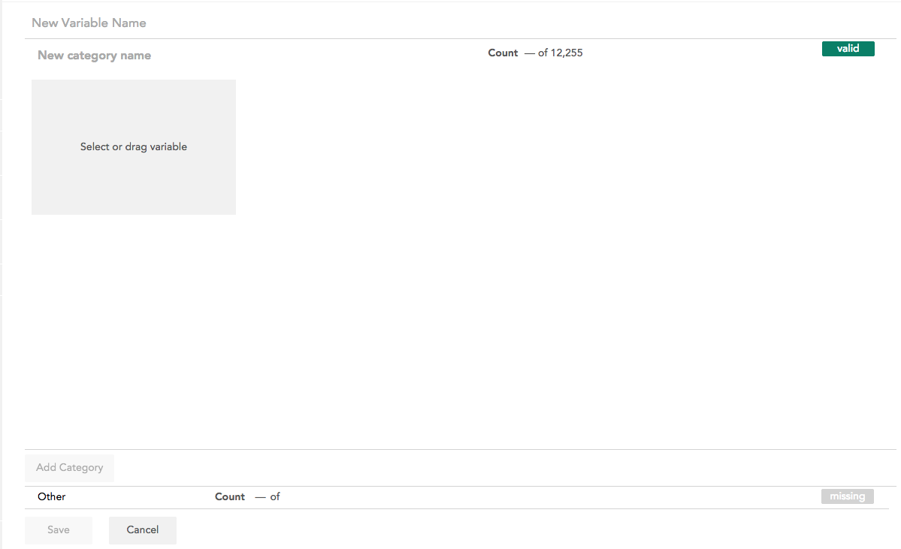
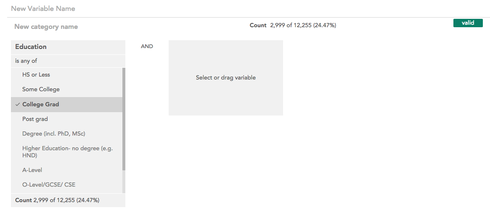
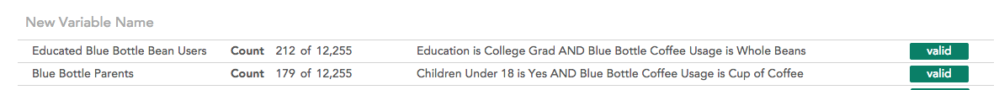
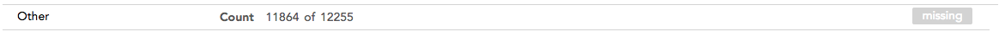

When you open the categorical variable creator from the New
variables page the following interface
opens:

This interface allows you to define categories for the new categorical
variable one at a time. Select a variable from the sidebar by clicking or
dragging it to get started. The selected variable will be added to the open
category.

Defining a category works identically to the Filter Builder - you can define what rows of the data will be included
in the category based on other variables in the dataset.
Once you have finished defining a category, click Add Category to close
that category and start a new one. You must name a category before starting a
new one. As you add categories, they will be shown at the top of the
interface.

Click on a category to expand it and edit it.
You can change the order of categories by clicking and dragging them to a new
spot in the list. The categories will be evaluated in order, so if a row
evaluates as true for more than one category, it will be included in the top-
most one.
The valid/missing toggle on the right side of each category determines whether
the category will be counted as valid or missing in the new variable.
At the bottom of the interface is the Other category:

This category contains all rows that meet none of the defined conditions. By
default is is named Other and marked missing, but you can edit the name and
toggle whether it is valid or missing. It cannot be moved from the bottom
position in the variable.
Once you have finished defining categories, click Save to create the variable.
The variable must have a name in order to be saved.